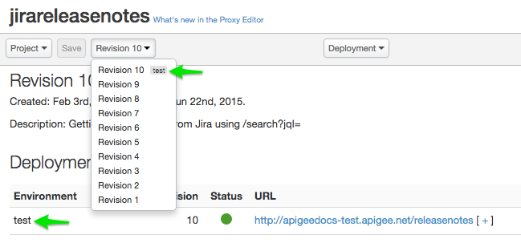
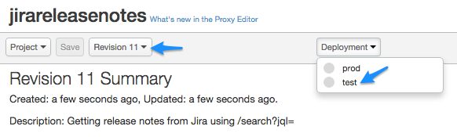
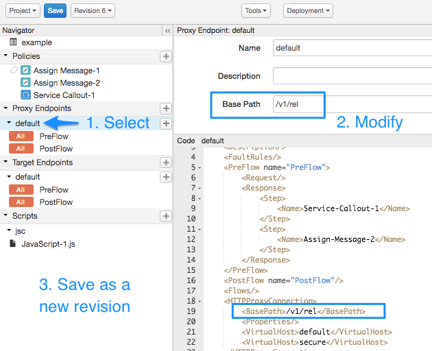
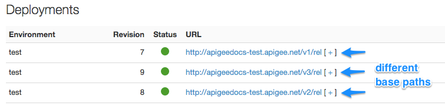

All organizations in Apigee Edge, by default, have two environments: test and prod. The naming is arbitrary. These environments are merely designed to provide you with one area to work on and test API changes, and another area where APIs are exposed to apps.
Depending on your role, you may not be able to deploy to all environments. Users can only deploy to the test environment. If you're an administrator you can deploy to any environment.
You can deploy proxies as revisions or versions. These are distinct concepts, as explained next.
Each environment in an organization can only have one deployed revision of an API proxy. It is common to have a proxy revision in prod while another revision is in test as it's being tested or developed. For example, you could have revision 1 deployed in test and revision 20 deployed in prod. You can view deployment of all revisions on the Overview page of the API proxy editor.

When you create a new revision of an API proxy without changing its base path, then deploy it to an environment in which it's already deployed, the previous version is undeployed and the new revision is deployed in its place. Note that deployment through the management UI might impact inbound calls. To handle and transition inbound calls more gracefully during deployment, use the management API. See the section on seamless deployment in http://docs.apigee.com/node/8405.
Edge supports multiple version deployments of a proxy in a single environment. Each version must have a different base path (for example /v1 and /v2).
To deploy (or undeploy) an API proxy in the management UI:

If the API proxy base path is the same as another deployed revision in that environment, the former revision is undeployed and the new revision is deployed in its place.You can also undeploy a revision by performing the previous steps on an already deployed revision, indicated by a green dot next to the environment name.
You can deploy multiple versions of an API proxy to the same environment (such as test) by performing the following steps:
/v1, /v2, /v3, and so on.test environment.In this scenario, each API proxy can be defined uniquely, with different flows, policies, and configurations, and you can make API calls to each proxy in the test environment.
To deploy multiple versions of an API proxy to the same environment:
<BasePath> element to reflect the new API proxy version. For example, change v1 to v2.
At this point, you can make any flow, policy, or other configuration changes you want to the API proxy and click Save.On the Overview page, you can see the multiple API proxy versions, all with different base paths, deployed to the same environment.
